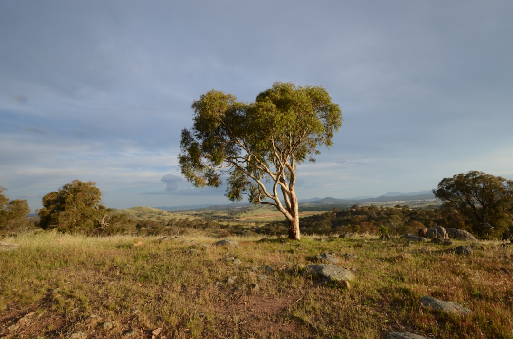

Canberra tree work starts with 4 checks: ownership, protected status, practical scope and written comparison. The published guide names 6 possible routes: removal, pruning, stump grinding, arborist assessment, emergency tree work and hedge or smaller-tree trimming. It points readers to the Urban Forest Act 2023, ACTmapi and City Services guidance before major private-tree work is authorised.
For homeowners comparing tree removal canberra options, the useful starting point is not price from height alone, but ownership, protected status, access and the written scope of work.
Tree Removal Canberra Explained
Top Tree Removal Canberra frames the first decision around whether removal, pruning, assessment or another route fits the tree. The published guide separates private, public and protected status before major work is arranged, and states that all public trees are protected. It also notes that a private tree may be protected under ACT rules.
That status check should sit beside the reason for the work. A dead, structurally compromised or unsuitable tree may lead to removal, while deadwood, clearance or canopy objectives may point to selective pruning. If health, risk, protected status or development questions remain unclear, an arborist assessment may be the better first request.
- Confirm whether the tree is on private or public land.
- Check ACTmapi and current City Services guidance before major private-tree work.
- State whether the intended outcome is removal, pruning, assessment, stump work or urgent make-safe work.
Who This Guide Applies To
This guide applies to Canberra residents preparing a tree-work enquiry where ownership, protected status, access or nearby assets could affect the answer. It is useful when the tree is close to roofs, fences, visible lines, slopes, gates or areas that need clean-up after the work.
It does not replace an inspection, written quote, insurance check or provider-level proof. Qualifications, memberships, availability and acceptance of the job must be confirmed with the actual operator. The same standard applies when comparing more than one written response.
A related planning resource is available at this Canberra tree-work planning guide.
Quote Inputs That Change Scope
The published guide says there is no reliable price from height alone. A useful enquiry shows the whole tree, trunk, access route and nearby constraints so the response can address method, inclusions and exclusions.
Send the suburb, reason for the work, whole-tree and trunk photos, gate or access width, nearby roofs and fences, visible lines, slope and the result wanted after completion. Clarify whether timber, mulch, green waste, final clean-up, surface roots, backfill and stump grinding are included.
- Ask whether the response includes removal, pruning, stump work, waste and site repair.
- Ask for method, approvals, credentials, insurance, inclusions and exclusions in writing.
- Separate immediate make-safe work from later clean-up or stump decisions when the issue is urgent.
Protected Tree Checks In The ACT
The published guide points readers to City Services tests and ACTmapi before arranging major private-tree work. It also references the Urban Forest Act 2023, the ACT Tree Register and protected-tree checks. Those inputs support checking status rather than assuming approval from position, species or condition.
A private tree may be protected by size, registration or other qualifying conditions described in ACT guidance. The guide also says a dead native tree can still require care in the status check. For public trees, it states that residents must not prune or remove street trees themselves.
When contacting a provider, state what has already been checked and what remains unknown. Do not present approval as resolved unless the status has been confirmed.
Choosing Between Work Types
Removal is one possible route, not the automatic one. Selective pruning may suit deadwood, clearance or canopy objectives. Arborist assessment may be needed where the question is health, risk, protected-tree status or development impact.
Stump grinding should be scoped separately from above-ground removal. Define grinding depth, access, surface roots, grindings and backfill before comparing responses. Hedge and smaller-tree trimming also need dimensions, access, desired finish and green waste handling.
For fallen or storm-damaged trees, the published guide describes emergency work as safety-first triage covering electrical risk and make-safe scope. Keep people clear of an unsafe area, treat overhead or fallen electrical lines as a separate hazard, then clarify the immediate work requested.
Compare Provider Proof And Inclusions
The published guide avoids borrowing an unnamed operator's licence, insurance, memberships or project history. Readers should use the same standard. Confirm proof for the actual business quoting the work, in writing, before accepting a scope.
Compare responses line by line. One may include stump grinding, waste removal and site repair, while another may stop after cutting and removal of above-ground material. One may assume easy access, while another may allow for narrow gates, nearby structures or more complex rigging.
Before choosing, ask what remains assumed: ownership status, protected-tree checks, access width, visible services, slope, final clean-up, approval responsibility and exclusions.
- Identify ownership. Confirm whether the tree is private or public before arranging removal or major pruning.
- Check protected status. Use ACTmapi and current City Services guidance where private-tree protection may apply.
- Document the site. Provide whole-tree photos, trunk photos, access width, nearby structures, visible lines and slope.
- Define inclusions. State whether the enquiry includes pruning, removal, stump work, timber, mulch, waste and clean-up.
- Compare written scopes. Ask each provider to confirm method, approvals, credentials, insurance, inclusions and exclusions in writing.
| Situation | Likely route to ask about | Scope details to clarify |
|---|---|---|
| Dead, compromised or unsuitable tree | Removal or arborist assessment | Protected status, access, nearby assets, stump and waste |
| Deadwood, clearance or canopy objective | Selective pruning | Objective, branch areas, access and green waste |
| Stump remains after work | Stump grinding | Grinding depth, surface roots, grindings and backfill |
| Storm damage or fallen tree | Emergency tree work | Immediate hazard, make-safe work and later clean-up |
| Unclear health or protected-tree question | Arborist assessment | Reason for assessment, documents needed and next decision |
Common questions
Can a Canberra tree be removed just because it is inconvenient? The published guide does not treat inconvenience as enough by itself. It says removal may suit a dead, structurally compromised or unsuitable tree, but protected status, ownership and the needed outcome should be checked first.
Is price mostly based on tree height? No. The guide says there is no reliable price from height alone. Access, trunk and canopy conditions, nearby assets, stump work, waste and clean-up can change the written scope.
Do public trees need a different process? Yes. The published guide states that all public trees are protected and that residents must not prune or remove street trees themselves.
What should be sent with an enquiry? Send the suburb, reason for the work, whole-tree and trunk photos, access notes, nearby roofs or fences, visible lines, slope and whether stump or waste work is required.
This guide covers Canberra tree-work planning, status checks, quote inputs and provider comparison before a resident chooses a contractor.